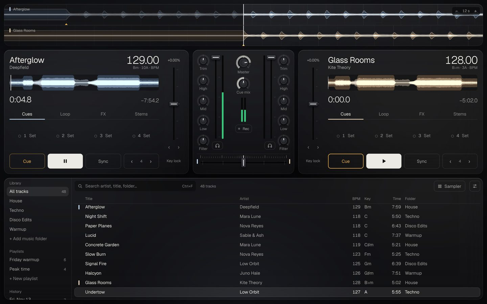

Interlude
A free, open-source DJ app for Mac
Pro features with a fast, lightweight footprint.
Free and open source under GPLv3+
GPLv3+What’s new
GPLv3+macOS 11+ on Apple silicon
Open source under GPLv3+. See what’s new
Latest versionmacOS 11+ on Apple siliconGPLv3+
Latest version for macOS 11+ on Apple silicon, licensed GPLv3+
Requires macOS 11+ on Apple silicon
What’s newLicensed under GPLv3+

Install, import, and play
-
1
Download
Get Interlude.dmg, open it, and drag Interlude into Applications.
-
2
Open it
Open Interlude from Applications or Spotlight. After that, it keeps itself up to date.
-
3
Add your music
Click + Add music folder, or bring your library over from Rekordbox or Serato with File › Import. Plug in your controller and it connects by itself.
Everything you need for a full set
Decks
- AnalysisBPM, key and beatgrid
- SyncTempo and phase
- CuesHot cues, loops, beat jump
- FeelSlip, quantize, key lock
- WaveformsThree-band, scrolling
Mixer and effects
- EQ3 bands with full kills
- EffectsEcho, reverb, flanger, phaser
- GainSet for every track
- LimiterNever clips
- CueHeadphones, with a blend
Stems
- PartsVocals, melody, bass, drums
- SplitOn your Mac, offline
- MuteLive, or from the pads
Library
- SearchInstant
- PlaylistsAnd your set history
- ImportRekordbox and Serato
- FormatsEvery common one
Controllers
- DDJ-FLX4Mapped in full
- 140+ moreVia Mixxx mappings
- The restMIDI learn
Recording and more
- RecordYour set, to WAV
- Sampler8 slots
- ShortcutsRemap any of them
- HelpReport a problem
FAQ
Is it really free?
Yes. There's no pro tier, no account and no subscription. Interlude is open source under the GPL, so anyone can read, change and share the code.
Does it work on Windows, Linux or Intel Macs?
Not yet. The beta is for Macs with Apple silicon (M1 and later). Other platforms are on the roadmap.
Will my controller work?
The Pioneer DDJ-FLX4 is fully mapped. Interlude also reads Mixxx mapping files and ships with more than 140 of them, so most popular controllers connect on their own. If yours doesn't, Settings › Controllers lets you map it with MIDI learn.
Does it change my music files?
No. Cues, beatgrids and playlists are kept in Interlude's own library. Your files are only read.
How do I report a bug?
Choose Help › Report a Problem. Interlude saves a report with what you describe, the app's logs and your system (no music) to your Desktop, ready to send. You can also open an issue.
Send an idea or build it yourself
Interlude is free and open source, so anyone can fix bugs, add features, or support new gear, including you.